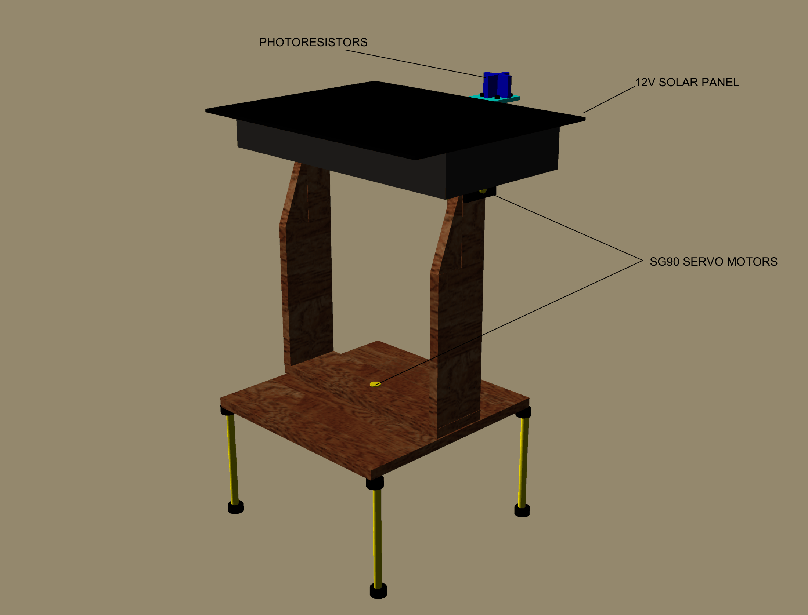
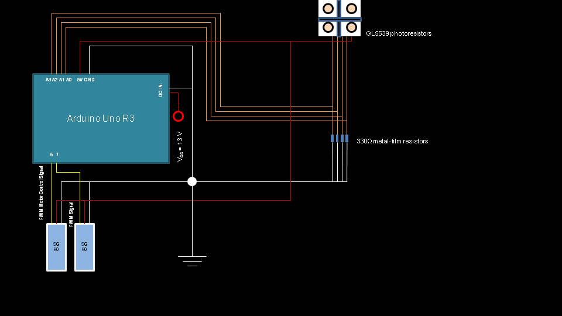
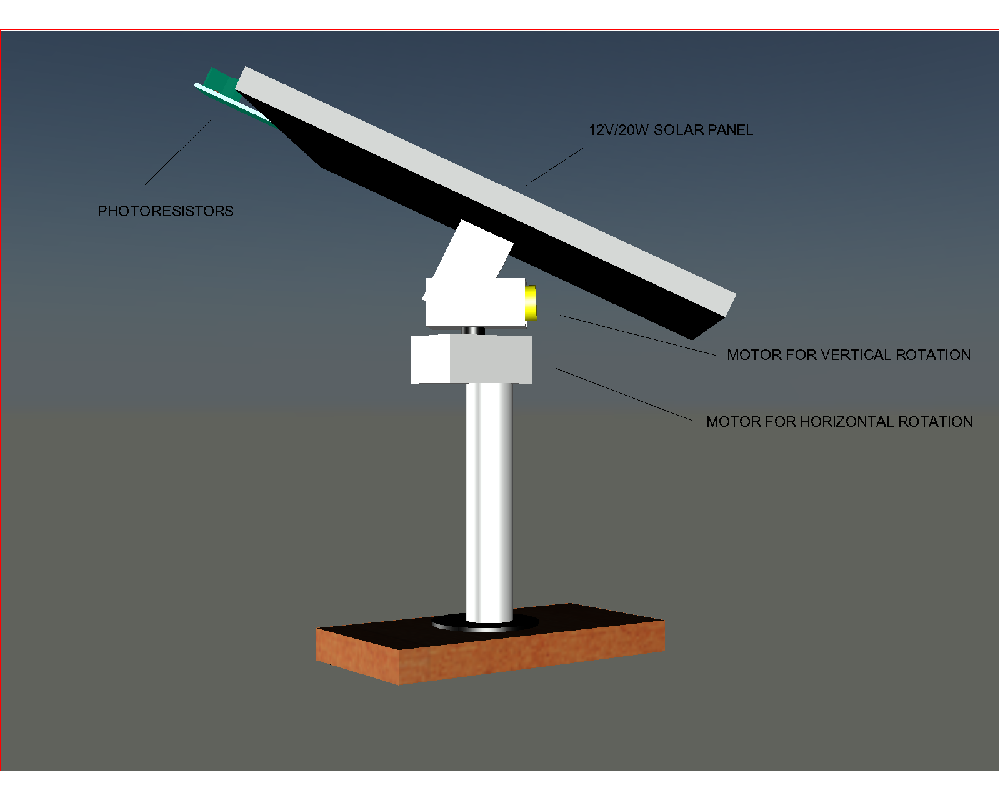
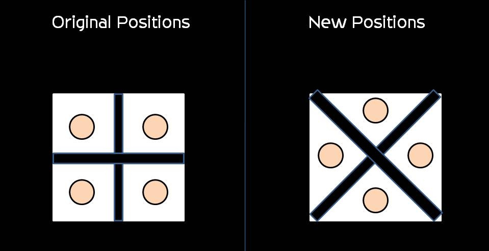
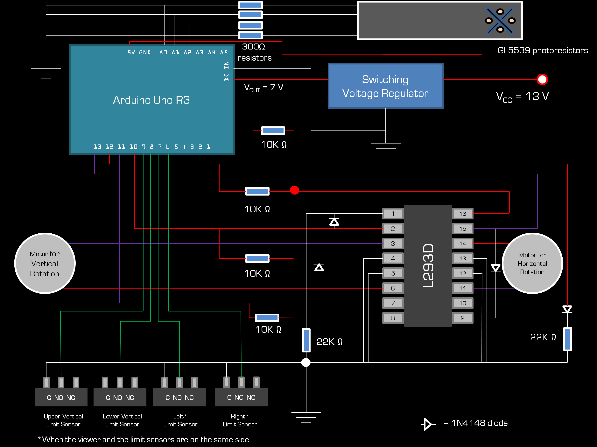
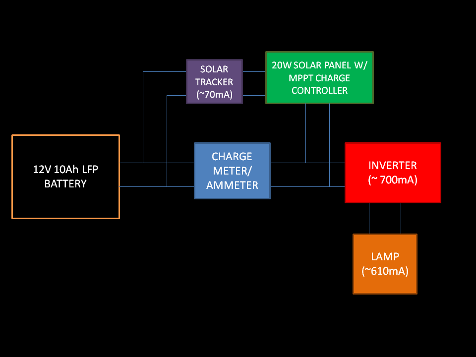
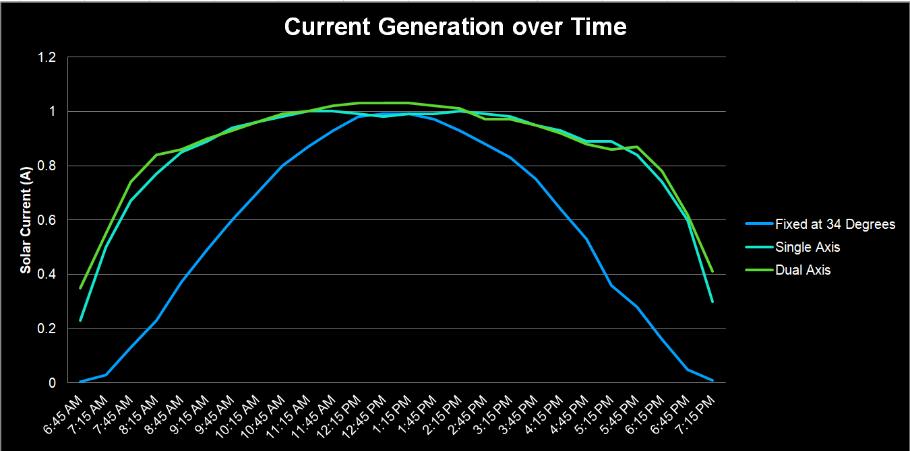

I am currently a senior student at Glendora High School. I am interested in an electrical engineering career, and over the summer, I was looking for a project in order to enhance my interest and understanding of electrical engineering. In my efforts to find a suitable project, I discovered that building a solar tracker was the most common project pertaining to that field. Therefore, I chose this as my summer project due to the availability of the necessary components.
My goal was not just to make a demo, but to make a practical and efficient design to charge and power devices such as a desk lamp. A 12V/20W solar panel is sufficient for this purpose. My initial design was based on a pre-existing solar tracker design, which can be found here. I purchased the necessary components, including the Arduino, breadboards, and made the mechanical components out of wooden planks with the help from my father. Below, you can see a rendering of the apparatus that I made for this solar tracker, along with the circuit diagram.

Figure 1: A CAD rendering of the design for the original tracker

Figure 2: The circuit diagram for the original tracker
As illustrated in Figure 1, there are wooden planks supporting the solar tracker, which allow the tracker to rotate freely up to 180 degrees to track the sun's position. Four photoresistors are needed to cover all directions of sunlight. As the sun moves, the sensor readings will become imbalanced. The Arduino will compare the top/bottom and left/right readings, and if the difference exceeds a pre-set threshold, the Arduino will send HIGH/LOW signals to the appropriate pins in order to move the solar tracker such that it is perpendicular to the sun.
However, very quickly into testing, we realized that the vertical SG90 servo motor, with a maximum stall torque of 1.8 kgf·cm, is unable to generate enough torque to lift the 20W solar panel and the rotational apparatus. Eventually, we settled for a much smaller solar panel that is rated for 12V/3.6W in order for this tracker to work. Below is a demonstration of the solar tracker in action with a flashlight, which simulates the sun hitting the four photoresistors.
Although this tracker works as a demo, it is impractical because during testing, we discovered that in order to hold the solar panel at a steep angle, the vertical servo motor constantly requires current up to 400mA, which is higher than the maximum current the solar panel can produce (300 mA). As a result, the solar tracker consumes more power than the power generated by the panel, which defeats the purpose of a solar tracker.
Since our original design was impractical because of the nature of the servo motors, we explored other types of motors with locking mechanisms to eliminate power consumption while the panel is in a static position.
In the end, we came across a gimbal from Amazon, which contained two wormgear motors on top of a steel base, and four limit sensors mounted in the up, down, left, and right directions of rotation. This gimbal was perfect for our project, as we discovered that it was more than capable of holding our 20W solar panel without power and rotating it at a reasonable speed with a supplied voltage as low as 5V. We used 7V for the tracker to minimize its power consumption. A CAD rendering of our setup can be seen below.

Figure 3: A CAD rendering of our new solar tracker setup, with a gimbal and wooden base
One minor difference between my design and the one that most people use was that I rotated the photoresistors by 45°, as illustrated in Figure 4, because I discovered that this approach allows more accurate control of the solar tracker.

Figure 4: A side-by-side comparison of the original and new arrangement of the photoresistors
Figure 5 illustrates the new tracker's circuit diagram. The motors are driven by the L293D motor driver IC, which is controlled by the Arduino based on the inputs from the photoresistors. The limit sensors are directly connected to the Arduino to prevent the motors from overrotating and to identify the angles of the tracker during the initialization stage right after being powered up. The switching voltage regulator was used to efficiently drop the 13V LFP battery to 7V.

Figure 5: The circuit diagram for our newly designed solar tracker
A software program was created for the Arduino Uno to make the solar tracker work as intended. The software can be broken down into two parts: initialization and tracking. Before initialization, the solar tracker must be positioned where the two side-by-side horizontal limit sensors are approximately facing South. The initialization portion is executed once: when the Arduino first receives power (either through the USB port or the DC jack). It sends a HIGH signal to digital pin 10 and a LOW signal to pin 11 to activate the vertical motor to level out the solar panel. The solar panel continues to rotate after levelling out until it triggers the lower vertical limit sensor and pulls pin 8 LOW, which causes the software to send a LOW signal to pin 10, stopping the motor. The software then immediately sends a LOW signal to pin 10 and a HIGH signal to pin 11 to reverse the direction of the motor rotation for 5 seconds, after which the software sends a LOW signal to pin 11 to stop the vertical motor. The software then sends a HIGH signal to pin 13 and a LOW signal to pin 12 to activate the horizontal motor and turn the panel counterclockwise until it triggers the horizontal limit sensor, after which pin 7 is pulled LOW, causing the software to send a LOW signal to pin 13, stopping the motor. The software then immediately sends a LOW signal to pin 13 and a HIGH signal to pin 12, reversing the direction of the motor rotation for 2 seconds. Finally, a LOW signal is sent to pin 12 to stop the horizontal motor. This concludes the initialization process.
On July 17th, 2026, the solar tracker was placed in an optimal location, where it received uninterrupted sunlight from 9:00 AM to 5:00 PM. Its movements were captured on a camcorder, and the footage was sped up to 8 seconds for demonstration purposes.
Sped up video recording of solar tracker from 9:00 AM to 5:00 PM
How much additional energy does this dual axis tracker produce compared to a fixed panel or a single axis tracker? After all, increased current generation is the SOLE REASON for building a solar tracker.
The following setup is used to measure the current produced by the solar panel when it is connected to a battery and a load (through the use of an inverter and a lamp drawing a total of 1.3 A). Here the battery is to stabilize the output voltage from the solar panel. The load is greater than maximum current the solar panel can generate so that current always flow forward through the ammeter. Therefore the current generated by the solar panel is the difference between the current reading displayed on the ammeter and the load current. Please note that the ammeter was not directly connected to the output of the MPPT controller due to the limitations of the crude ammeter.

Figure 9: A block diagram for our testing setup
We measured the current generation for three setups: dual axis tracker, single axis tracker rotating from East to West, and a fixed panel tilted 34 degrees to the South (same as the latitude of our location for the year round optimal position). The test was performed over the course of several days from July 22-30 2026. Figure 10 illustrates the current (in A) produced by the solar panel, measured at 30 minute intervals. Using a midpoint Riemann sum to approximate the total charge generated by the solar panel, offset by the current consumption of the solar tracker controller (≈ 0.7 Ah for single and dual axis trackers; 0 Ah for fixed panel), we discovered that the solar panel on the dual axis tracker had a 42.8% greater net current generation compared to when it is mounted in a fixed position at 34°. As you can see in the Figure, the current generation for the single and dual axis tracker is almost identical except for the morning / late afternoon hours, and the fixed panel severely lags behind both the single and dual axis tracker. This is because the experiment was conducted in the middle of the summer, where the sun is almost at the apex of the sky.

| Fixed at 34° | Single Axis | Dual Axis |
|---|---|---|
| 7.249 | 10.093 | 10.355 |
Figure 10: A graph of solar panel current production from 6:15 AM to 6:45 PM, measured in 30 minute intervals
| Time of Day | Fixed at 34° | Single Axis | Dual Axis |
|---|---|---|---|
| 6:45 AM | 0.005 | 0.23 | 0.35 |
| 7:15 AM | 0.03 | 0.5 | 0.55 |
| 7:45 AM | 0.13 | 0.67 | 0.74 |
| 8:15 AM | 0.23 | 0.77 | 0.84 |
| 8:45 AM | 0.37 | 0.85 | 0.86 |
| 9:15 AM | 0.49 | 0.89 | 0.9 |
| 9:45 AM | 0.6 | 0.94 | 0.93 |
| 10:15 AM | 0.7 | 0.96 | 0.96 |
| 10:45 AM | 0.8 | 0.98 | 0.99 |
| 11:15 AM | 0.87 | 1 | 1 |
| 11:45 AM | 0.93 | 1 | 1.02 |
| 12:15 PM | 0.98 | 0.99 | 1.03 |
| 12:45 PM | 0.99 | 0.98 | 1.03 |
| 1:15 PM | 0.99 | 0.99 | 1.03 |
| 1:45 PM | 0.97 | 0.99 | 1.02 |
| 2:15 PM | 0.93 | 1 | 1.01 |
| 2:45 PM | 0.88 | 0.99 | 0.97 |
| 3:15 PM | 0.83 | 0.98 | 0.97 |
| 3:45 PM | 0.75 | 0.95 | 0.95 |
| 4:15 PM | 0.64 | 0.93 | 0.92 |
| 4:45 PM | 0.53 | 0.89 | 0.88 |
| 5:15 PM | 0.36 | 0.89 | 0.86 |
| 5:45 PM | 0.28 | 0.84 | 0.87 |
| 6:15 PM | 0.16 | 0.74 | 0.78 |
| 6:45 PM | 0.05 | 0.6 | 0.62 |
| 7:15 PM | 0.01 | 0.3 | 0.41 |
The graph will look quite differnt for other seasons especially in winter time, when the sun is much further to the South. I may not be able to repeat these measurements in the winter due to time constraint but the dual axis tracker is expected to generate significantly more energy than both the single axis tracker and the fixed panel during those months.
Overall, the best conclusion to draw from this data is that the dual-axis solar tracking system is the best for increasing a solar panel's energy production. However, a single-axis tracker system is usually more cost-efficient and practical while also increasing energy production by a comparable factor as a dual-axis system.